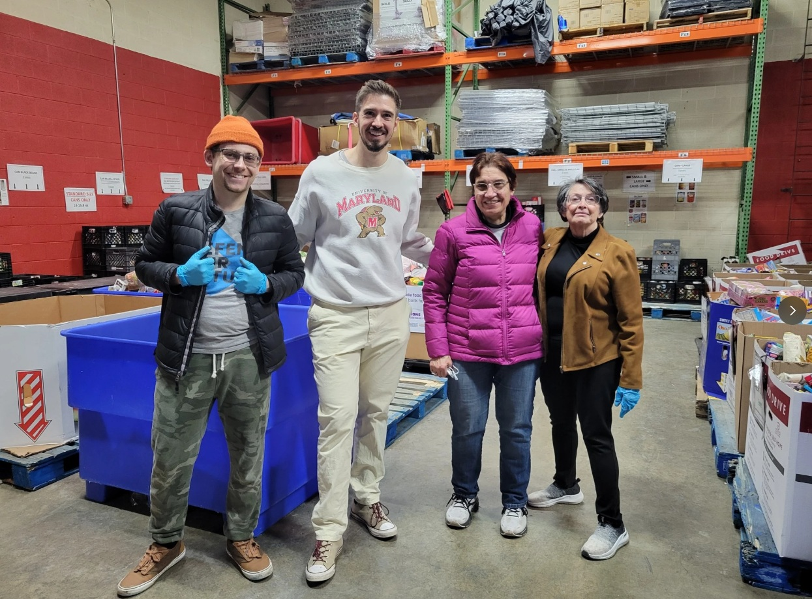
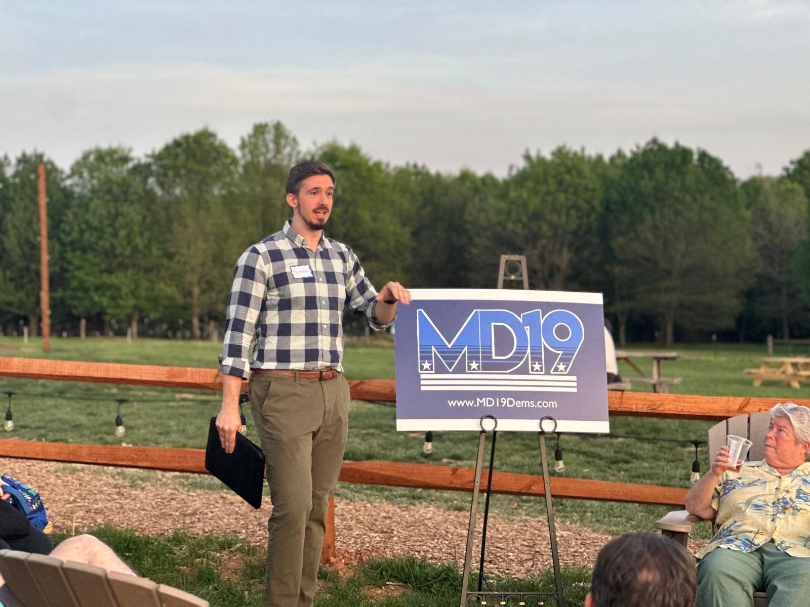
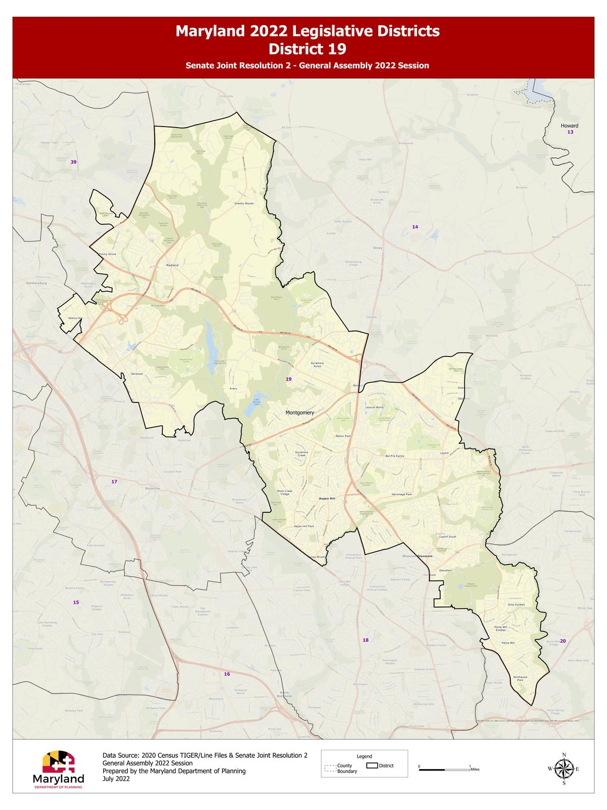

On the Ground
In the Community



Simon Weaver is running for the Montgomery County Democratic Central Committee to champion grassroots organizing, expand voter engagement, and strengthen our party in every neighborhood across District 19.

I believe the Democratic Party is strongest when everyday people are at the table, not just during election season, but year-round.
I'm running for the Montgomery County Democratic Central Committee in District 19 because I want to help build a more inclusive, transparent, and engaged local party that reflects the values of our community.
The Central Committee plays a vital behind-the-scenes role in our democracy. It fills vacancies, supports candidates, and connects with voters. I want to bring fresh energy, grassroots experience, and a commitment to genuine community engagement to that work.
The Montgomery County Democratic Central Committee is the official governing body of the Democratic Party at the county level. Unlike the County Council, it is not a legislative body. It does not pass laws or set budgets. Instead, it shapes the direction and strength of the local party itself.
Committee members help fill vacancies in elected office, support Democratic candidates up and down the ballot, organize voter registration drives, and build the infrastructure that keeps our party connected to the people it serves. It is foundational, often-overlooked work, and it matters enormously.
Empowering neighbors to lead. I will work to recruit, train, and support precinct-level organizers so that every corner of District 19 has an active Democratic presence, not just in election years, but every day.
Expanding who participates. From registration drives to ballot education, I will push for creative, multilingual outreach that meets voters where they are: at community events, schools, and online.
Amplifying our community's voice. I will work to ensure the Central Committee actively connects residents' concerns with elected officials, supporting Democratic values of equity, opportunity, and accountability.
Fostering belonging. The party should be a welcoming space for everyone: longtime Democrats, first-time voters, young people, and new Americans alike. I will champion events, forums, and partnerships that bring us together.

District 19 spans a wide swath of Montgomery County, covering communities including Aspen Hill, Glenmont, Wheaton, Kemp Mill, Four Corners, Leisure World, Layhill, Olney, Norbeck, Norwood, Derwood, Redland, and Shady Grove, among others.
It is one of the most vibrant and diverse areas in the state, home to longtime residents, new Americans, young families, and seniors. Our neighborhoods are connected by a shared commitment to strong schools, safe communities, and a better future for everyone who calls District 19 home.
Map source: Maryland Department of Planning, 2022 Legislative Districts

Whether you want to ask a question, share an idea, or just say hello, I would love to hear from you. A strong party starts with strong connections.
Contact Simon